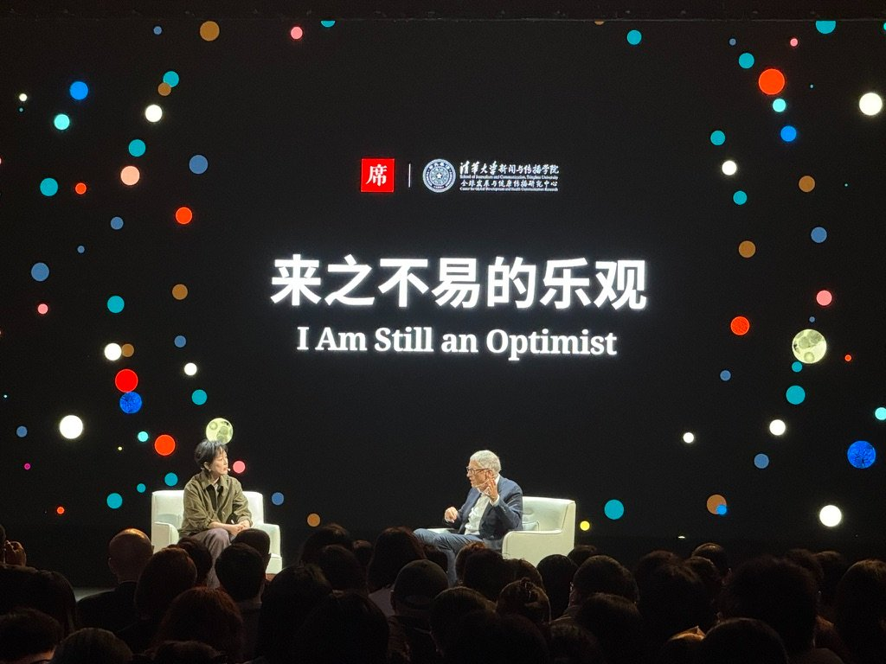

大概一两个月前，看到我之前关注的一位博主，沉寂很久之后搬到巴黎生活。她在ins上发了story，说现在在巴黎的生活很好。她知道自己变强了、成熟了。但她也知道，有某一部分的自我，被自己亲手杀死了。
我应该不是第一次看到“被自己亲手杀死了”这个表达。但这是第一次让我开始思考。我知道在过去的一两年里，我也认为自己变得独立、勇敢、成熟，变成了“迭代升级过后”的我自己。那么，会不会和她一样，我也有一部分的自己被我亲手杀死了呢？
这个问题在我的脑子里隐隐存在着。大概一个多月吧。
直到前几天，我终于知道，是哪一部分的自己，被我亲手杀死了。
（下面这部分是GPT根据我那天和它的对话，总结generate出来的仿照我的语气写的。我觉得和我自己写的还是会有些差别。但如果让我写的话，我好像已经不知道该从何写起了。所以就对GPT写的作一些修改，且作一个纪念吧。）
其实我一直都知道自己变了很多。离家出走、南极工作、环球旅行、关系崩塌、重新建立主体性，这两年发生的事情太多了。我也一直承认自己变强了、变成熟了、变复杂了。以前的我会把这些变化统一概括成“长大了”。我甚至有点喜欢这个说法，因为它听起来像一种成长、一种升级、一种获得了更多力量之后的状态。
直到昨天晚上，我在剪一期一年半以前录的播客。那时候的我刚从香港辞职回宁波不久，刚刚开始重新面对家乡、家庭、未来、亲密关系这些东西。那个时候的我还没有真正离家出走，没有和家里闹翻，也还没有完整经历后来那些关系的崩塌。我坐在客厅里，和朋友聊天，聊理想、聊城市、聊出走、聊未来。
我剪完发给她，她说，觉得我们那个时候好青涩哦。
其实我最开始并没有觉得青涩，或者不会用青涩这个词来形容那个时候的我。我甚至有一点惊讶于那个时候的我其实已经隐隐约约懂主体性了，也已经知道很多事情“不对劲”了。
但也正是那句“青涩”，让我思考——如果不是青涩，那是什么呢？我会用什么词语来形容那个时候的我呢？
我突然明白了。那大概是一种乐观吧。一种甚至都不能称为是幼稚的、带着一点点天真的、但那种天真不是未谙世事的天真、而是有一些明白世事的残酷、却仍旧天真地相信那些人会保留一些起码的利她与善良、不至于残忍地伤害的、纯粹的乐观。
我意识到，那个时候的我是真的相信，只要我足够努力、足够真诚、足够善良、足够愿意沟通，很多东西都会慢慢变好的。我甚至在播客里很认真地说，我觉得自己和家人的关系有改善，我觉得未来会好的，我觉得大家可以互相理解，我觉得我接下来会快乐地和家里人一起过年。
我重听的时候，第一反应是觉得好笑。我是真的一边剪辑一边笑了出来。不是一种嘲笑，也不是一种大笑。是一种咧开了嘴、上下排牙轻轻地并在一起、我能感觉到我的半边酒窝出现的、眼角应该是上扬的那种笑。我觉得自己好天真，但完全不觉得可耻。即使时过境迁，经历了后面那一连串的出走、回家、再出走，即使我完全知道后来发生的事情和我当时说的不同，家人也没有像我所想的那样缓和了态度或是理解我、而是仅仅因为我能为他们所用而展露笑容（我知道这个是因为后来我不能为他们所用的时候，他们的笑容完全不复踪影了）。可我仍旧不想把那段剪掉。我无比感谢自己从某个时刻开始，运用创作的媒介，记录自己自以为很丰富的、实则很短暂的人生。我惊喜地打开那个尘封已久的录音，才能和以前的自己隔空对话。我是带着这样的一种有点像是“给自己也给全世界听听我之前的flag”的心情，把这段保留下来的。
直到那晚我发布完所有的东西，去洗澡的时候，我突然毫无来由地哭了。起初我以为是连续坐在电脑前将近十日，终于把囤积了一两年的很多事情给弄好了、录音也剪了、网站也改版大整理好了的那种、疲惫但终于赶完ddl可以出去放松休息睡个好觉了的那种、哭了。我关上浴室的灯，让我的视觉终于可以不再一片明亮了。我让花洒里喷出来的水，顺着我的头发，从头顶流到地上。我的眼泪搭了这些水的顺风车，留在脸颊上的时候比它们热。我能感觉到那两行，流下来，经过我的左右脸上。
可我洗完澡的时候，突然意识到，我之前一直回答不出来的那个问题，我终于知道答案了。我终于知道，是哪一部分的自己，被我亲手杀死了。
我近乎出于本能地趴在床上，那出几日未写的日记本，写下：
“过了差不多一分钟 已连抽啜泣都不剩了
更何况那两行温热的泪了.
我几乎快要忘了那阴沉的跨海大桥.
我知道我身体里的有一部分被我亲手杀死了.”
旁边自然是一堆带着符号和freeflow的自我剖析。我说：
“当我把一切云淡风轻地说出来
那种乐观.“青涩”
那种痛到身上了 还以为一切都会好的 那种乐观
那种无条件相信世界 的单纯
无条件相信别人也会无条件地爱你 的单纯
幼稚又可爱
（相比起来现在像个毒妇）
被我杀死了.
我不知道是否是永远杀死了
但我知道最可怕的其实是 我不知道她的死 究竟是不是好事.”
“以及之前不会自我审查 没受表达的trauma的自己”
我又继续和GPT说，“那种感觉特别像看见一只被卖掉之前的小狗。它以为主人只是带它出门玩，它甚至还在很开心地摇尾巴，它不知道后面等着它的是什么。”
我说，被杀死的，不是积极，不是勇敢，也不是热情。我现在依然有这些东西。我甚至觉得现在的自己比以前更有行动力、更有主体性、更有生命力。真正死掉的，是一种更底层的东西。是一种“即使世界有暗流，我也默认它最终会温柔”的本能。
那个时候的我，其实一直都活在一种巨大的幻觉里。我以为人与人之间的爱是可以通过努力换来的，我以为家庭关系可以靠真诚修复，我以为沟通能解决问题，我以为别人会珍惜我的真心，我以为如果我足够好，很多事情就会朝着好的方向发展。
后来我才发现，不是这样的。
有些人就是会背叛你；有些关系就是会突然断裂；有些人拿到你的真心以后，并不会更珍惜你，只会更理所当然地消耗你；有些家庭永远不会因为你长大了、优秀了、懂事了，就停止控制你。
而最残忍的一点是，我其实不是被某一件事情摧毁的。我是慢慢地，一点一点地，在自己都没有意识到的时候，就看着那个自己死掉的。
还有那些不适合公开发出来的、当下立刻抽离的片段。
现在的我，似乎已经很习惯突然非常清晰地意识到，我们已经不在同一个波段了。我变得不再想解释自己，我只想解释给另一个时空状态下的我自己听；我不再想温柔地消化一切然后再一直以笑脸示人。我觉得这个甚至和“是不是‘活菩萨’”无关。也许活菩萨与否代表的是善良。
我说，那种像小猫翻肚皮一样的阶段已经过去了。甚至连愧疚感都不必再有了，只剩下一种非常平静的“哦，原来如此”。现在是穿着铠甲的善良。
以前的那个我是会受伤的。而现在的我，已经开始在真正受伤之前，就提前开启自我保护了。这种保护的技能是从多少件事情里学来的，经历过多少份天真的讶异、不愿承认的嘴硬、再到最终没脸昭告天下地悄悄地不得不接受——我从那段一年多以前的录音里才找到了一些蛛丝马迹。包括已经忘了很久的，跨海大桥上的暴雨、还没订机票的洛杉矶。
有时候我觉得现在的自己很厉害。我终于学会了边界感和课题分离，终于知道互相接不住的时候、很多关系不值得再继续耗损自己。我开始懂得表达的代价，懂得人和人之间需要权限，懂得不是所有人都“配”看到完整的我。我甚至终于开始理解为什么很多创作者后期会越来越简洁、越来越克制、越来越少说话。因为开始变得复杂，所以到最后一定会一层一层地分离。
以前我会想把全部旅程讲完。我害怕遗漏，害怕失真，害怕如果不完整记录，那些东西就消失了。现在我在剪播客的时候，第一次开始觉得：有些东西其实不重要。解释少一句也没关系。逻辑不够完整也没关系。没人有义务知道我全部的人生。我也没有义务向所有人证明这一切的合理性。大多数人只是互为过客，或者说，所有人都是互为过客。就连自己的灵魂，和自己的身体，某种程度上来说也只是一种过客。
以前我的播客和各种作品都像大脑的外接硬盘。现在我突然觉得，它只能是我的一个器官。
而真正的大脑，真正最深的那些东西，开始重新回到只有我自己能进入的地方。也许是日记，也许是没有人能看到的文档，也许是深夜和AI的聊天记录，也许只是我自己的大脑，解构到最后就是一些曾经活跃过的神经元、下次也不知道是什么时候还会再次活跃的那些。
我现在甚至开始理解那些“不再表达”的创作者了。以前我会觉得它们是不是变了，变世故了，变商业化了，变得不真诚了。可现在我发现不是这样的。是因为当一个人真的经历得越来越多、想得越来越深之后，它已经不可能再像以前一样，把完整的自己摊开给所有人看了。这是一种必然的、也符合常理和世事规律的。我甚至觉得绝大多数人很早就明白了，是我自己太傻太天真太单纯。
所以后来大家开始写专栏、写虚构、写半虚构。开始“见人说人话，见鬼说鬼话”。开始只表达某一个切面。不是因为虚伪，而是因为本来就很难公开完整。很危险。
我其实还是觉得有点难过。因为我知道，现在的我已经回不去了。
那个会毫无保留地表达、会天然相信世界、会对所有关系抱有希望、会觉得“只要有一个人听到就值得”的我，也死掉了。我开始把潜在的攻击和伤害算作“价”，融入性价比。
有时候我会觉得，如果一个人能够永远不用长大，应该是一件很幸运的事情。
但后来我又觉得，既然已经如此，我也没有选择，那么便继续这样下去罢。好像也不赖。
我只是知道，有一部分的自己，被我亲手杀死了。
----------------------------------
一些循环在脑内的歌：
《張敬軒 Hins Cheung - Medley: 垃圾/絕/失樂園/大開眼戒 (Hins Live in Passion 2014)》
还有2024年7月初，坐着高铁，带着大包小包，从深圳回宁波那天，在耳机里循环了一路的：
《爱的故事上集 (Live) - 張敬軒&孫耀威》
《少女的祈祷 - 杨千嬅 三二一GO! 演唱會2017 (Live)》
前两天自驾去福建，想起那段时光，重听老歌，仿若与彼时自我擦肩重逢。我坐在自己买的车里，握着方向盘驶过路边出现的岭南热带的棕榈和椰树；她坐在公路边两千米处高架桥上飞速驶过的高铁，耳机里诉说着祈求下集是個可愛夢兒。从她路过我到穿过我仅用了三五秒，亦有将近两年之久。我目送佢，仿若看见佢眼中的半笑容半愁容。啖荔枝，谨以此写作纪念。
--------------------
后记：
也许这种记录的魅力就在于，一边听一边觉得“hey you know what's happening next?”的感觉，以及意识到其实现在的自己也“身在此山中”的、让子弹飞一会儿的感觉。
Und, 想起前段时间参加过的盖茨基金会的活动，主题叫“来之不易的乐观”（I am still an Optimist）
